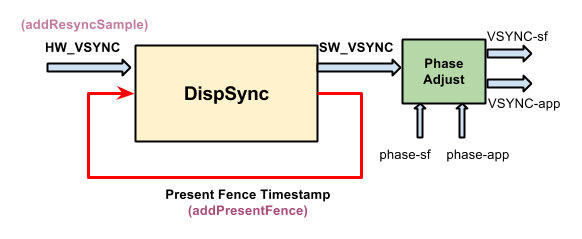
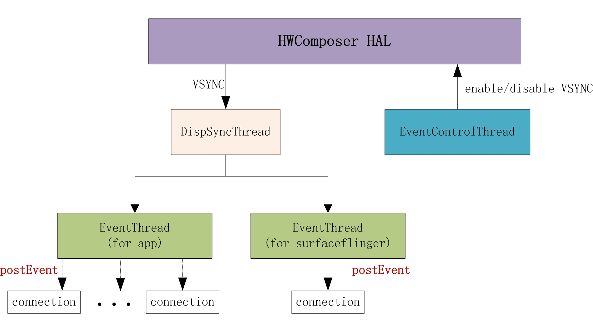
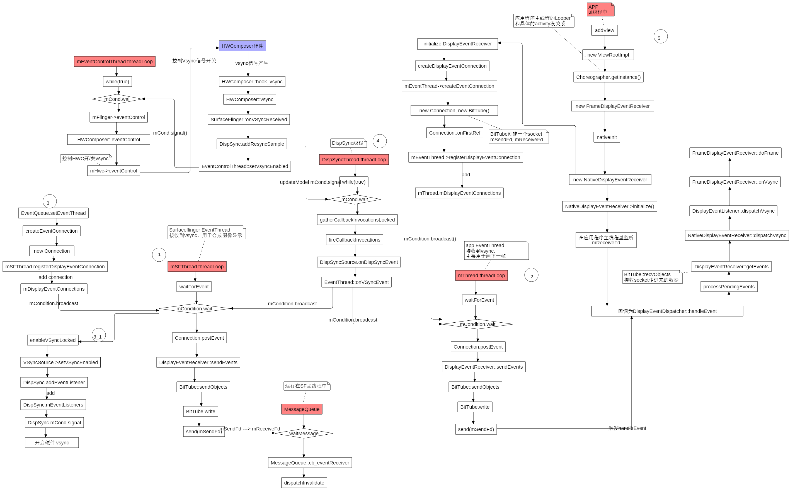
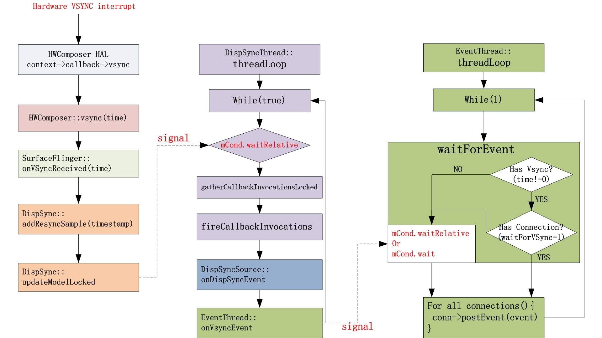
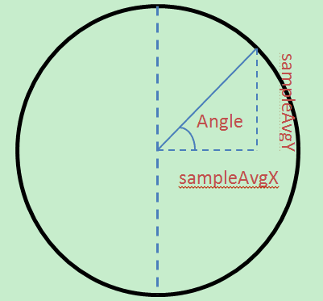

为了理解systrace中HW Vsync， sf vsync， app vsync的含义和作用。这里主要参照Android R AOSP源码对这几种VSYNC的关系和调用流程进行大致的梳理。
vsync相关线程
EventControlThread: 控制硬件vsync的开关
DispSyncThread: 软件产生vsync的线程，接收HWComposer HAL的VSYNC信号，并分发给EventThread
SF EventThread: 该线程用于SurfaceFlinger接收vsync信号用于渲染
App EventThread: 该线程用于接收vsync信号并且上报给App进程，App开始绘制
四种vsync 从这4个线程，可以将vsync分为4种不同的类型：
HW vsync, 真实由硬件产生的vsync信号
SW vsync, 由DispSync产生的vsync信号
SF vsync, SF接收到的vsync信号
App vsync, App接收到的vsync信号

硬件vsync HWComposer HAL通过callback函数，把VSYNC信号传给DispSyncThread，DispSyncThread传给EventThread

函数调用总流程图 
部分流程：
1 2 3 4 5 6 7 8 9 10 11 12 13 14 15 16 17 18 19 20 21 SurfaceFlinger::init() ----> SurfaceFlinger::processDisplayHotplugEventsLocked() ----> SurfaceFlinger::initScheduler 创建sf thread和app thread ----> (1)Scheduler::createConnection ----> Scheduler::createConnectionInternal ----> EventThread::createEventConnection [new EventThreadConnection创建对象] (2)MessageQueue::setEventConnection ----> (2.1) mEventTube.getFd() (2.2) stealReceiveChannel (2.3) MessageQueue::cb_eventReceiver ----> MessageQueue::eventReceiver [接收Vsync信号] ----> MessageQueue::Handler::dispatchInvalidate [Handler消息处理]----> MessageQueue::Handler::handleMessage ----> SurfaceFlinger::onMessageReceived ----> SurfaceFlinger::onMessageInvalidate -----> //合成刷新是通过frameAvailableListener->onFrameAvailable(item)触发 SurfaceFlinger::signalLayerUpdate() 请求合成 ----> MessageQueue::invalidate() -----> EventThreadConnection::requestNextVsync()
SF创建EventThread(app&sf) 1 2 3 4 5 6 7 8 9 10 11 12 13 mScheduler = getFactory().createScheduler([this ](bool enabled) { setVsyncEnabled(enabled); }, *mRefreshRateConfigs, *this ); mAppConnectionHandle = mScheduler->createConnection("app" , mPhaseConfiguration->getCurrentOffsets().late.app, impl::EventThread::InterceptVSyncsCallback()); mSfConnectionHandle = mScheduler->createConnection("sf" , mPhaseConfiguration->getCurrentOffsets().late.sf, [this ](nsecs_t timestamp) { mInterceptor->saveVSyncEvent(timestamp); });
SF注册Connection 1 2 3 4 5 6 7 8 9 10 11 12 13 14 15 16 17 18 19 20 21 22 23 24 25 26 27 28 29 30 31 EventThreadConnection::EventThreadConnection(EventThread* eventThread, ResyncCallback resyncCallback, ISurfaceComposer::ConfigChanged configChanged) : resyncCallback(std ::move(resyncCallback)), mConfigChanged(configChanged), mEventThread(eventThread), mChannel(gui::BitTube(8 * 1024 )) {} void EventThreadConnection::onFirstRef () mEventThread->registerDisplayEventConnection(this ); } status_t EventThread::registerDisplayEventConnection (const sp<EventThreadConnection>& connection) std ::lock_guard<std ::mutex> lock (mMutex) auto it = std ::find(mDisplayEventConnections.cbegin(), mDisplayEventConnections.cend(), connection); if (it != mDisplayEventConnections.cend()) { ALOGW("DisplayEventConnection %p already exists" , connection.get()); mCondition.notify_all(); return ALREADY_EXISTS; } mDisplayEventConnections.push_back(connection); mCondition.notify_all(); return NO_ERROR; }
Note： 有关notify_all和unique_lock<std::mutex>锁可参考：C++11条件变量：notify_one()与notify_all()的区别
sf请求vsync 两条请求vsync的流程：
参考signalLayerUpdate通知Layer更新信息 开始，SF触发合成开始请求VSYNC
当显示屏准备完毕，SF EventThread connection开始监听Vsync信号，相关流程：
1 2 3 4 5 6 7 8 SurfaceFlinger::init() ----> SurfaceFlinger::initializeDisplays() 设置初始条件 -----> SurfaceFlinger::onInitializeDisplays() -----> SurfaceFlinger::setTransactionState ----> SurfaceFlinger::setTransactionFlags ----> SurfaceFlinger::signalTransaction() ----> MessageQueue::invalidate() [在请求刷新合成时也会调用] -----> EventThread::requestNextVsync
EventThread线程唤醒函数threadmain 部分代码：
1 2 3 4 5 6 7 8 9 10 11 12 13 void EventThread::requestNextVsync (const sp<EventThreadConnection>& connection) if (connection->resyncCallback) { connection->resyncCallback(); } std ::lock_guard<std ::mutex> lock (mMutex) if (connection->vsyncRequest == VSyncRequest::None) { connection->vsyncRequest = VSyncRequest::Single; mCondition.notify_all(); } }
在threadmain函数其中创建了DisplayEventReceiver 对象，该类用于传输VSYNC信号。
1 2 3 4 5 6 7 8 DisplayEventReceiver::DisplayEventReceiver (MessageQueue::setEventConnection) ----> EventThreadConnection::stealReceiveChannel -----> status_t EventThreadConnection::stealReceiveChannel (gui::BitTube* outChannel) outChannel->setReceiveFd(mChannel.moveReceiveFd()); return NO_ERROR; }
调用DispSyncSource.setVSyncEnabled开启硬件Vsync
BitTube 参考：setEventThread变更
BitTube，其实现是socketpairt套接字，用于传递消息。Buffer大小是4K
DisplayEventReceiver 查看该类的头文件，关于vsync的主要函数作用：
1 2 3 4 5 6 7 8 9 10 11 12 13 14 15 16 17 18 19 20 21 22 23 24 25 26 27 28 29 30 31 32 33 public : explicit DisplayEventReceiver ( ISurfaceComposer::VsyncSource vsyncSource = ISurfaceComposer::eVsyncSourceApp, ISurfaceComposer::ConfigChanged configChanged = ISurfaceComposer::eConfigChangedSuppress) int getFd () const ssize_t getEvents (Event* events, size_t count) static ssize_t getEvents (gui::BitTube* dataChannel, Event* events, size_t count) static ssize_t sendEvents (gui::BitTube* dataChannel, Event const * events, size_t count) status_t setVsyncRate (uint32_t count) status_t requestNextVsync () status_t requestLatestConfig () private : sp<IDisplayEventConnection> mEventConnection; std ::unique_ptr <gui::BitTube> mDataChannel; };
DispSyncSource.setVSyncEnabled开启硬件Vsync 流程：
1 2 3 4 EventThread::threadMain -----> DispSyncSource::setVSyncEnabled ----> surfaceflinger/Scheduler/DispSync.cpp -- DispSync::addEventListener ----> class DispSyncThread : public Thread -- addEventListener
1 2 3 4 5 6 7 8 9 10 11 12 13 14 15 16 17 18 19 20 21 22 23 24 25 26 27 28 29 30 31 32 33 34 35 36 37 38 39 40 41 42 43 44 45 46 47 void EventThread::threadMain (std ::unique_lock<std ::mutex>& lock) ..... State nextState; if (mVSyncState && vsyncRequested) { nextState = mVSyncState->synthetic ? State::SyntheticVSync : State::VSync; } else { ALOGW_IF(!mVSyncState, "Ignoring VSYNC request while display is disconnected" ); nextState = State::Idle; } if (mState != nextState) { if (mState == State::VSync) { mVSyncSource->setVSyncEnabled(false ); } else if (nextState == State::VSync) { mVSyncSource->setVSyncEnabled(true ); } mState = nextState; } .... } void DispSyncSource::setVSyncEnabled (bool enable) std ::lock_guard lock (mVsyncMutex) if (enable) { status_t err = mDispSync->addEventListener(mName, mPhaseOffset, static_cast <DispSync::Callback*>(this ), mLastCallbackTime); } else { status_t err = mDispSync->removeEventListener(static_cast <DispSync::Callback*>(this ), &mLastCallbackTime); if (mDolphinCheck) { if (mDolphinCheck(mName)) { status_t err = mDispSync->addEventListener(mName, mPhaseOffset, static_cast <DispSync::Callback*>(this ), mLastCallbackTime); if (err != NO_ERROR) { ALOGE("error registering vsync callback: %s (%d)" , strerror(-err), err); } } } } mEnabled = enable; }
硬件VSYNC从HWComposer HAL发到EventThread SF请求合成时关于Vsync的部分流程：
1 2 3 4 5 6 7 8 SurfaceFlinger::onMessageInvalidate ----> SurfaceFlinger::updateFrameScheduler() -----> (1) SurfaceFlinger::getVsyncPeriod() ----> surfaceflinger/DisplayHardware/HWC2.cpp -- Display::getDisplayVsyncPeriod (2) Scheduler::resyncToHardwareVsync (3) DispSync::addResyncSample -----> DispSync::updateModelLocked [开始计算更新SW vsync 模型]
mPeriod Vsync周期时长值变更流程 流程：
1 2 3 4 5 6 7 8 9 10 11 12 SurfaceFlinger::init() ----> SurfaceFlinger::initializeDisplays() 设置初始条件 -----> SurfaceFlinger::onInitializeDisplays() -----> SurfaceFlinger::setPowerModeInternal 设置Display的power mode -----> (1) Scheduler::onScreenAcquired (2) Scheduler::resyncToHardwareVsync 通过硬件Vsync重新设置软件vysnc -----> Scheduler::setVsyncPeriod 设置vsync周期时长 -----> (1) DispSync::setPeriod (2) DispSync::beginResync() (3) EventControlThread::setVsyncEnabled 唤醒threadmain线程[如果硬件vsync没有enable,那么就通知EventControlThread去通知硬件enable VSYNC]
流程图及部分代码 
resyncToHardwareVsync打开硬件VYSNC SurfaceFlinger在初始化HWComposer时会默认关闭硬件Vsync信号，这里直接调用eventControl
而resyncToHardwareVsync则是和硬件VSYNC进行同步，通过调用到setVsyncEnabled开启硬件VSYNC
surfaceflinger/Scheduler/Scheduler.cpp 1 2 3 4 5 6 7 8 9 10 11 12 13 14 15 16 17 18 19 20 21 22 23 24 25 26 27 28 29 30 void Scheduler::resyncToHardwareVsync (bool makeAvailable, nsecs_t period, bool force_resync) { std ::lock_guard<std ::mutex> lock (mHWVsyncLock) if (makeAvailable) { mHWVsyncAvailable = makeAvailable; } else if (!mHWVsyncAvailable) { return ; } } if (period <= 0 ) { return ; } setVsyncPeriod(period, force_resync); } void Scheduler::setVsyncPeriod (nsecs_t period, bool force_resync) std ::lock_guard<std ::mutex> lock (mHWVsyncLock) mPrimaryDispSync->setPeriod(period); if (!mPrimaryHWVsyncEnabled || force_resync) { mPrimaryDispSync->beginResync(); mEventControlThread->setVsyncEnabled(true ); mPrimaryHWVsyncEnabled = true ; } }
setVsyncEnabled会释放mCond信号，这样在EventControlThread的threadLoop里的mCond会被唤醒去操作硬件Vsync开关
*addResyncSample更新mPeriod 重要变量的含义：
硬件vsync样本个数：MIN_RESYNC_SAMPLES_FOR_UPDATE（要6个硬件vsync样本以上才计算，当然样本越多，模型越精确）
mPeriod：即是显示屏的刷新率，这里mPeriod是根据样本个数去掉一个最大一个最小，算平均
mPhase：偏移时间，这个相称和具体的SF/APP Thread里固定的相称是不一样的，这个相移是针对 mPeroid的一个偏移
mModelUpdated：表示是否模型已经更新
mReferenceTime：第一个硬件Vsync的时间，每次SW vsync计算下一个vsync时间时，都是以该时间作为基准，这样可以减少误差
Code 1 2 3 4 5 6 7 8 9 10 11 12 13 14 15 16 17 18 19 20 21 22 23 24 25 26 27 28 29 30 31 32 33 34 35 36 37 38 39 40 41 42 43 44 45 46 47 48 49 50 51 52 53 54 55 56 57 58 59 60 61 62 63 64 65 66 67 68 69 70 71 72 73 74 75 76 77 78 79 80 81 82 83 84 85 86 87 88 89 90 91 92 93 94 95 96 97 98 99 100 101 102 103 104 105 106 107 108 109 110 111 112 113 114 115 116 117 118 119 void DispSync::beginResync () Mutex::Autolock lock (mMutex) ; ALOGV("[%s] beginResync" , mName); resetLocked(); } bool DispSync::addResyncSample (nsecs_t timestamp, std ::optional<nsecs_t > , bool * periodFlushed) Mutex::Autolock lock (mMutex) ; ALOGV("[%s] addResyncSample(%" PRId64 ")" , mName, ns2us(timestamp)); *periodFlushed = false ; const size_t idx = (mFirstResyncSample + mNumResyncSamples) % MAX_RESYNC_SAMPLES; mResyncSamples[idx] = timestamp; if (mNumResyncSamples == 0 ) { mPhase = 0 ; ALOGV("[%s] First resync sample: mPeriod = %" PRId64 ", mPhase = 0, " "mReferenceTime = %" PRId64, mName, ns2us(mPeriod), ns2us(timestamp)); } else if (mPendingPeriod > 0 ) { .... if (mTraceDetailedInfo) { ATRACE_INT("DispSync:PendingPeriod" , mPendingPeriod); ATRACE_INT("DispSync:IntendedPeriod" , mIntendedPeriod); } *periodFlushed = true ; } } ..... mReferenceTime = timestamp; mThread->updateModel(mPeriod, mPhase, mReferenceTime); if (mNumResyncSamples < MAX_RESYNC_SAMPLES) { mNumResyncSamples++; } else { mFirstResyncSample = (mFirstResyncSample + 1 ) % MAX_RESYNC_SAMPLES; } updateModelLocked(); ...... ALOGV("[%s] addResyncSample returning %s" , mName, modelLocked ? "locked" : "unlocked" ); if (modelLocked) { *periodFlushed = true ; mThread->lockModel(); } return !modelLocked; } void DispSync::updateModelLocked () if (mNumResyncSamples >= MIN_RESYNC_SAMPLES_FOR_UPDATE) { nsecs_t durationSum = 0 ; nsecs_t minDuration = INT64_MAX; nsecs_t maxDuration = 0 ; static constexpr size_t numSamplesSkipped = 2 ; for (size_t i = numSamplesSkipped; i < mNumResyncSamples; i++) { size_t idx = (mFirstResyncSample + i) % MAX_RESYNC_SAMPLES; size_t prev = (idx + MAX_RESYNC_SAMPLES - 1 ) % MAX_RESYNC_SAMPLES; nsecs_t duration = mResyncSamples[idx] - mResyncSamples[prev]; durationSum += duration; minDuration = min(minDuration, duration); maxDuration = max(maxDuration, duration); } durationSum -= minDuration + maxDuration; mPeriod = durationSum / (mNumResyncSamples - numSamplesSkipped - 2 ); double sampleAvgX = 0 ; double sampleAvgY = 0 ; double scale = 2.0 * M_PI / double (mPeriod); for (size_t i = numSamplesSkipped; i < mNumResyncSamples; i++) { size_t idx = (mFirstResyncSample + i) % MAX_RESYNC_SAMPLES; nsecs_t sample = mResyncSamples[idx] - mReferenceTime; double samplePhase = double (sample % mPeriod) * scale; sampleAvgX += cos (samplePhase); sampleAvgY += sin (samplePhase); } sampleAvgX /= double (mNumResyncSamples - numSamplesSkipped); sampleAvgY /= double (mNumResyncSamples - numSamplesSkipped); mPhase = nsecs_t (atan2 (sampleAvgY, sampleAvgX) / scale); if (mPhase < -(mPeriod / 2 )) { mPhase += mPeriod; ALOGV("[%s] Adjusting mPhase -> %" PRId64, mName, ns2us(mPhase)); } mThread->updateModel(mPeriod, mPhase, mReferenceTime); mModelUpdated = true ; } }
计算的相移图 
setVsyncEnabled硬件VSYNC开关控制 1 2 3 4 5 SurfaceFlinger::init() ----> SurfaceFlinger::processDisplayHotplugEventsLocked() ----> SurfaceFlinger::initScheduler 创建sf thread和app thread ----> SurfaceFlinger::setVsyncEnabled(bool enabled) [传入true，开启硬件vsync] -----> SurfaceFlinger::setVsyncEnabledInternal(bool enabled)
硬件vsync相关函数：
1 2 3 4 5 6 7 8 9 10 11 12 13 14 15 16 17 18 19 20 21 22 23 void SurfaceFlinger::setVsyncEnabledInternal (bool enabled) ATRACE_CALL(); Mutex::Autolock lockVsync (mVsyncLock) ; mHWCVsyncPendingState = enabled ? hal::Vsync::ENABLE : hal::Vsync::DISABLE; auto displayId = getInternalDisplayIdLocked(); if (mNextVsyncSource) { if (mActiveVsyncSource) { displayId = mActiveVsyncSource->getId(); getHwComposer().setVsyncEnabled(*displayId, hal::Vsync::DISABLE); } displayId = mNextVsyncSource->getId(); } else if (mActiveVsyncSource) { displayId = mActiveVsyncSource->getId(); } getHwComposer().setVsyncEnabled(*displayId, mHWCVsyncPendingState); if (mNextVsyncSource) { mActiveVsyncSource = mNextVsyncSource; mNextVsyncSource = NULL ; } }
DispSync
DispSyncThread是软件产生vsync的线程，也控制硬件VSync信号同步。DispSync是定义在SurfaceFlinger类里的成员变量，因此在初始化 SurfaceFlinger时，就会初始化DispSync。
DispSync初始化 流程：
1 2 3 4 5 6 SurfaceFlinger::init() ----> SurfaceFlinger::processDisplayHotplugEventsLocked() ---> SurfaceFlinger::initScheduler -----> surfaceflinger/SurfaceFlingerDefaultFactory.cpp -- DefaultFactory::createScheduler ---> Scheduler::Scheduler [构造函数] ----> std::unique_ptr<DispSync> createDispSync [创建DispSync]
代码：
Scheduler构造函数：
frameworks/native/services/surfaceflinger/Scheduler/Scheduler.cpp 1 2 3 4 5 6 7 8 9 10 11 12 13 14 15 16 17 18 19 Scheduler::Scheduler(impl::EventControlThread::SetVSyncEnabledFunction function, const scheduler::RefreshRateConfigs& refreshRateConfig, ISchedulerCallback& schedulerCallback, bool useContentDetectionV2, bool useContentDetection) : mSupportKernelTimer(sysprop::support_kernel_idle_timer(false )), mPrimaryDispSync(createDispSync(mSupportKernelTimer)), mEventControlThread(new impl::EventControlThread(std ::move(function))), mSchedulerCallback(schedulerCallback), mRefreshRateConfigs(refreshRateConfig), mUseContentDetection(useContentDetection), mUseContentDetectionV2(useContentDetectionV2) { .... std ::unique_ptr <DispSync> createDispSync (bool supportKernelTimer) ... } else { return std ::make_unique<impl::DispSync>("SchedulerDispSync" , sysprop::running_without_sync_framework(true )); } }
surfaceflinger/Scheduler/DispSync.cpp 1 2 3 4 5 6 7 8 9 10 11 12 13 14 15 16 17 18 19 20 21 22 23 24 25 26 27 28 29 30 31 32 33 34 35 36 37 38 39 DispSync::DispSync(const char * name, bool hasSyncFramework) : mName(name), mIgnorePresentFences(!hasSyncFramework) { mThread = new DispSyncThread(name, mTraceDetailedInfo); mThread->run("DispSync" , PRIORITY_URGENT_DISPLAY + PRIORITY_MORE_FAVORABLE); ... } class DispSyncThread :public Thread {public : DispSyncThread(const char * name, bool showTraceDetailedInfo) : mName(name), mStop(false ), mModelLocked("DispSync:ModelLocked" , false ), mPeriod(0 ), mPhase(0 ), mReferenceTime(0 ), mWakeupLatency(0 ), mFrameNumber(0 ), mTraceDetailedInfo(showTraceDetailedInfo) {} ...... virtual bool threadLoop () status_t err; nsecs_t now = systemTime(SYSTEM_TIME_MONOTONIC); ... if (mPeriod == 0 ) { err = mCond.wait(mMutex); if (err != NO_ERROR) { ALOGE("error waiting for new events: %s (%d)" , strerror(-err), err); return false ; } continue ; } targetTime = computeNextEventTimeLocked(now); ..... }
addEventListener唤醒线程DispSyncThread 接着上面threadmain函数流程调用到addEventListener，此处将唤醒上面threadloop的mCond.wait(mMutex)
1 2 3 4 5 6 7 8 9 status_t addEventListener (const char * name, nsecs_t phase, DispSync::Callback* callback, nsecs_t lastCallbackTime) ... mEventListeners.push_back(listener); mCond.signal(); return NO_ERROR; }
而mPeriod == 0)则仍旧是0，所以此时会continue继续往下执行。计算下一个Vsync信号的时间戳，并且上报给EventListener，如此DispSyncThread模型就会运作起来。
HWComposer回调onVysncReceived 1 2 3 4 surfaceflinger/DisplayHardware/HWComposer.cpp -- class ComposerCallbackBridge - android::hardware::Return<void> onVsync ----> SurfaceFlinger::onVsyncReceived ----> (1) addResyncSample 更新vysnc计算模型 (2) VSyncModulator::onRefreshRateChangeCompleted
此处会调用到addResyncSample函数，该函数会加入硬件vsync的样本，目的是为了计算、更新SW VSYNC的参数。具体解释将对应小节。
1 2 3 4 5 6 7 8 9 10 11 12 13 14 15 16 17 18 19 20 21 22 23 24 25 26 27 28 29 30 31 32 33 34 35 36 37 38 39 40 41 42 43 44 45 46 47 48 49 50 51 52 53 54 55 56 void SurfaceFlinger::onVsyncReceived (int32_t sequenceId, hal::HWDisplayId hwcDisplayId, int64_t timestamp, std ::optional<hal::VsyncPeriodNanos> vsyncPeriod) ATRACE_NAME("SF onVsync" ); Mutex::Autolock lock (mStateLock) ; if (sequenceId != getBE().mComposerSequenceId) { return ; } if (!getHwComposer().onVsync(hwcDisplayId, timestamp)) { return ; } bool periodFlushed = false ; mScheduler->addResyncSample(timestamp, vsyncPeriod, &periodFlushed); if (periodFlushed) { mVSyncModulator->onRefreshRateChangeCompleted(); } } void VSyncModulator::onRefreshRateChangeCompleted () if (!mRefreshRateChangePending) { return ; } mRefreshRateChangePending = false ; updateOffsets(); } void VSyncModulator::updateOffsets () std ::lock_guard<std ::mutex> lock (mMutex) updateOffsetsLocked(); } void VSyncModulator::updateOffsetsLocked () const Offsets& offsets = getNextOffsets(); mPhaseOffsetControl.setPhaseOffset(mSfConnectionHandle, offsets.sf); mPhaseOffsetControl.setPhaseOffset(mAppConnectionHandle, offsets.app); mOffsets = offsets; if (!mTraceDetailedInfo) { return ; } const bool isEarly = &offsets == &mOffsetsConfig.early; const bool isEarlyGl = &offsets == &mOffsetsConfig.earlyGl; const bool isLate = &offsets == &mOffsetsConfig.late; ATRACE_INT("Vsync-EarlyOffsetsOn" , isEarly); ATRACE_INT("Vsync-EarlyGLOffsetsOn" , isEarlyGl); ATRACE_INT("Vsync-LateOffsetsOn" , isLate); }
计算SW vsync并向APP/SF发送vsync信号 在计算完后，继续执行DispSyncThread的threadloop函数：
1 2 3 4 5 6 7 8 9 10 11 12 13 14 15 16 17 18 19 20 21 22 23 24 25 26 27 28 29 30 31 32 33 34 35 36 37 38 39 40 41 42 43 44 45 46 47 48 49 50 51 52 53 54 55 56 57 58 59 60 61 virtual bool threadLoop () status_t err; nsecs_t now = systemTime(SYSTEM_TIME_MONOTONIC); ... targetTime = computeNextEventTimeLocked(now); bool isWakeup = false ; if (now < targetTime) { if (mTraceDetailedInfo) ATRACE_NAME("DispSync waiting" ); if (targetTime == INT64_MAX) { ALOGV("[%s] Waiting forever" , mName); err = mCond.wait(mMutex); } else { ALOGV("[%s] Waiting until %" PRId64, mName, ns2us(targetTime)); err = mCond.waitRelative(mMutex, targetTime - now); } if (err == TIMED_OUT) { isWakeup = true ; } else if (err != NO_ERROR) { ALOGE("error waiting for next event: %s (%d)" , strerror(-err), err); return false ; } } now = systemTime(SYSTEM_TIME_MONOTONIC); static const nsecs_t kMaxWakeupLatency = us2ns(1500 ); if (isWakeup) { mWakeupLatency = ((mWakeupLatency * 63 ) + (now - targetTime)) / 64 ; mWakeupLatency = min(mWakeupLatency, kMaxWakeupLatency); if (mTraceDetailedInfo) { ATRACE_INT64("DispSync:WakeupLat" , now - targetTime); ATRACE_INT64("DispSync:AvgWakeupLat" , mWakeupLatency); } } callbackInvocations = gatherCallbackInvocationsLocked(now, computeNextRefreshLocked(0 , now)); } if (callbackInvocations.size() > 0 ) { fireCallbackInvocations(callbackInvocations); } } return false ; }
计算SW Vsync下一个vsync时间 这里其实就最多只有两种EventListener, 一个是SF EventThread,一个是App EventThread。
它们都需要接收Vsync信号来分别做不同的事情。
但是实际上两个线程都有一个vsync phase offset偏移值
1 2 3 4 5 6 7 8 9 10 11 12 13 14 15 16 17 18 19 20 21 22 23 24 25 26 27 28 29 30 31 32 33 34 35 36 37 38 39 40 41 42 43 44 45 46 47 48 49 50 51 52 53 54 55 56 57 58 59 60 61 62 63 64 65 66 67 68 private : nsecs_t computeNextEventTimeLocked (nsecs_t now) if (mTraceDetailedInfo) ATRACE_CALL(); ALOGV("[%s] computeNextEventTimeLocked" , mName); nsecs_t nextEventTime = INT64_MAX; for (size_t i = 0 ; i < mEventListeners.size(); i++) { nsecs_t t = computeListenerNextEventTimeLocked(mEventListeners[i], now); if (t < nextEventTime) { nextEventTime = t; } } return nextEventTime; } nsecs_t computeListenerNextEventTimeLocked (const EventListener& listener, nsecs_t baseTime) if (mTraceDetailedInfo) ATRACE_CALL(); nsecs_t lastEventTime = listener.mLastEventTime + mWakeupLatency; if (baseTime < lastEventTime) { baseTime = lastEventTime; ALOGV("[%s] Clamping baseTime to lastEventTime -> %" PRId64, mName, ns2us(baseTime)); } baseTime -= mReferenceTime; nsecs_t phase = mPhase + listener.mPhase; baseTime -= phase; if (baseTime < 0 ) { ALOGV("[%s] Correcting negative baseTime" , mName); baseTime = -mPeriod; } nsecs_t numPeriods = baseTime / mPeriod; nsecs_t t = (numPeriods + 1 ) * mPeriod + phase; t += mReferenceTime; if (isCloseToPeriod(t - listener.mLastEventTime)) { t += mPeriod; ALOGV("[%s] Modifying t -> %" PRId64, mName, ns2us(t)); } t -= mWakeupLatency; ALOGV("[%s] Corrected for wakeup latency -> %" PRId64, mName, ns2us(t)); return t; } bool isCloseToPeriod (nsecs_t duration) return duration < (3 * mPeriod) / 5 ; }
向SF/APP EventThread发送vsync信号 1 2 3 4 5 6 7 8 9 10 11 12 13 14 15 16 17 18 19 20 21 22 23 24 25 26 27 28 29 30 31 32 33 34 35 36 37 38 std ::vector <CallbackInvocation> gatherCallbackInvocationsLocked (nsecs_t now, nsecs_t expectedVSyncTime) if (mTraceDetailedInfo) ATRACE_CALL(); std ::vector <CallbackInvocation> callbackInvocations; nsecs_t onePeriodAgo = now - mPeriod; for (auto & eventListener : mEventListeners) { nsecs_t t = computeListenerNextEventTimeLocked(eventListener, onePeriodAgo); if (t < now) { if (isCloseToPeriod(now - eventListener.mLastCallbackTime)) { eventListener.mLastEventTime = t; ALOGV("[%s] [%s] Skipping event due to model error" , mName, eventListener.mName); continue ; } CallbackInvocation ci; ci.mCallback = eventListener.mCallback; ci.mEventTime = t; ci.mExpectedVSyncTime = expectedVSyncTime; if (eventListener.mPhase < 0 ) { ci.mExpectedVSyncTime += mPeriod; } ALOGV("[%s] [%s] Preparing to fire, latency: %" PRId64, mName, eventListener.mName, t - eventListener.mLastEventTime); callbackInvocations.push_back(ci); eventListener.mLastEventTime = t; eventListener.mLastCallbackTime = now; } } return callbackInvocations; }
postComposition更新SW Vsync的误差值 1 2 3 4 5 6 7 8 9 10 11 12 13 14 15 16 17 18 19 20 21 22 23 24 25 26 27 28 29 30 31 32 33 34 35 36 37 38 39 void SurfaceFlinger::postComposition () ATRACE_CALL(); ALOGV("postComposition" ); ... getBE().mDisplayTimeline.updateSignalTimes(); mPreviousPresentFences[1 ] = mPreviousPresentFences[0 ]; sp<DisplayDevice> vSyncSource = mNextVsyncSource; if (mNextVsyncSource == NULL ) { vSyncSource = mActiveVsyncSource; } mPreviousPresentFences[0 ] = vSyncSource ? getHwComposer().getPresentFence(*vSyncSource->getId()) : Fence::NO_FENCE; auto presentFenceTime = std ::make_shared<FenceTime>(mPreviousPresentFences[0 ]); getBE().mDisplayTimeline.push(presentFenceTime); ... mTransactionCompletedThread.addPresentFence(mPreviousPresentFences[0 ]); mTransactionCompletedThread.sendCallbacks(); if (display && display->isPrimary() && display->getPowerMode() == hal::PowerMode::ON && presentFenceTime->isValid()) { mScheduler->addPresentFence(presentFenceTime); } ... } void Scheduler::addPresentFence (const std ::shared_ptr <FenceTime>& fenceTime) if (mPrimaryDispSync->addPresentFence(fenceTime)) { enableHardwareVsync(); } else { disableHardwareVsync(false ); } }
addPresentFence 1 2 3 4 5 6 7 8 9 10 11 12 13 14 15 16 17 18 19 bool DispSync::addPresentFence (const std ::shared_ptr <FenceTime>& fenceTime) Mutex::Autolock lock (mMutex) ; if (mIgnorePresentFences) { return true ; } mPresentFences[mPresentSampleOffset] = fenceTime; mPresentSampleOffset = (mPresentSampleOffset + 1 ) % NUM_PRESENT_SAMPLES; mNumResyncSamplesSincePresent = 0 ; updateErrorLocked(); return !mModelUpdated || mError > kErrorThreshold; }
上面的mError是方差，当方差大于kErrorThreshold就返回true。
1 2 3 4 5 6 7 8 9 10 11 12 13 14 15 16 17 18 19 20 21 22 23 24 25 26 27 28 29 30 31 32 33 34 35 36 37 38 39 40 41 42 43 44 45 void DispSync::updateErrorLocked () if (!mModelUpdated) { return ; } int numErrSamples = 0 ; nsecs_t sqErrSum = 0 ; for (size_t i = 0 ; i < NUM_PRESENT_SAMPLES; i++) { nsecs_t time = mPresentFences[i]->getCachedSignalTime(); if (time == Fence::SIGNAL_TIME_PENDING || time == Fence::SIGNAL_TIME_INVALID) { continue ; } nsecs_t sample = time - mReferenceTime; if (sample <= mPhase) { continue ; } 5 nsecs_t sampleErr = (sample - mPhase) % mPeriod; if (sampleErr > mPeriod / 2 ) { sampleErr -= mPeriod; } sqErrSum += sampleErr * sampleErr; numErrSamples++; } if (numErrSamples > 0 ) { mError = sqErrSum / numErrSamples; mZeroErrSamplesCount = 0 ; } else { mError = 0 ; mZeroErrSamplesCount++; ALOGE_IF((mZeroErrSamplesCount % ACCEPTABLE_ZERO_ERR_SAMPLES_COUNT) == 0 , "No present times for model error." ); } if (mTraceDetailedInfo) { ATRACE_INT64("DispSync:Error" , mError); } }
参考文献
参考google文章： 在 Android 上进行高刷新率渲染
Google官网Multiple Refresh Rate
参考： CCSDN博客 刷新率和Vsync
参考： Android SurfaceFlinger SW Vsync模型